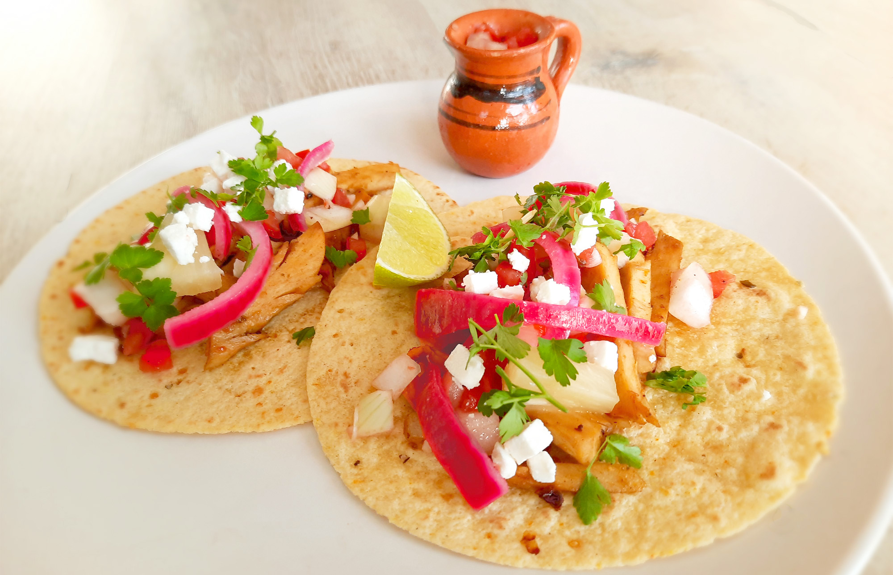

taco al pastor
Een van de bekendste tacogerechten uit Mexico. Traditioneel hoort er koriander in, maar in dit recept heb ik gekozen voor peterselie.

Bereidingsduur: 30 minuten
Aantal personen: 2
Ingrediënten:
6 stuks mini maistortilla
175 gram (vegetarische) shoarma
100 gram (vegan) witte kaas
1,5 ui
1 ingelegde rode ui
5 tomaten
1 teentje knoflook
2 gedroogde chilipepers
1 stuk limoen
naar smaak peterselie
1 theelepel kardemom
2 eetlepels suiker
200 milliliter azijn
2 schijfjes ananas
naar smaak mexicaanse salsa
1 theelepel komijn
1 eetlepel mexicaanse kruiden
6 stuks mini maistortilla
175 gram (vegetarische) shoarma
100 gram (vegan) witte kaas
1,5 ui
1 ingelegde rode ui
5 tomaten
1 teentje knoflook
2 gedroogde chilipepers
1 stuk limoen
naar smaak peterselie
1 theelepel kardemom
2 eetlepels suiker
200 milliliter azijn
2 schijfjes ananas
naar smaak mexicaanse salsa
1 theelepel komijn
1 eetlepel mexicaanse kruiden
Instructies:
1. Zorg ervoor dat je de ingelegde ui al vantevoren maakt. Snijd de rode ui in halve ringen. Verhit 200 ml water, de azijn, kardemom, suiker en peper naar smaak in een steelpannetje totdat de suiker is opgelost. Doe de rode ui samen met dit mengsel in een of meerdere weckpotjes. Laat dit een uurtje staan.
2. Om de salsa te maken grill je 4 ongesneden tomaten in ongeveer 10 minuten tot ze grillstreepjes krijgen. Keer regelmatig. Voeg daarna 1/2 ui, 0,5 teentje knoflook en 1 chilipeper toe aan de tomaten en pureer tot een rode salsa. Knijp de helft van de limoen uit hierover en roer. Verhit wat olijfolie in een pan en voeg de salsa voorzichtig toe en kook op een laag pitje. Laat dit 15 minuutjes staan. Hierdoor wordt de salsa dikker en rijker van smaak. Breng op smaak met peper en zout. Je salsa is klaar.
3. Snijd de ui, tomaat, knoflook, ananas, peterselie en witte kaas in kleine stukjes. Verhit olie in een grillpan en bak hierin de shoarma, 1/2 teentje knoflook en de 1/2 van een witte ui. Voeg de helft van de ananas, komijn, 1 gedroogde chilipeper zonder pitjes en mexicaanse kruiden toe en roer. Meng de andere nog 1/2 ui met de stukjes van 1 tomaat. Breng op smaak met peper.
4. Als de shoarma knapperig begint te worden, maak je de tortilla’s klaar zoals aangegeven op de verpakking. Vul deze met de shoarma en de rest van de ingrediënten die je hebt klaargemaakt. Verdeel de witte kaas, peterselie en ingelegde ui erover en besprenkel met de rest van de limoen. Voeg naar smaak Mexicaanse salsa toe.
1. Zorg ervoor dat je de ingelegde ui al vantevoren maakt. Snijd de rode ui in halve ringen. Verhit 200 ml water, de azijn, kardemom, suiker en peper naar smaak in een steelpannetje totdat de suiker is opgelost. Doe de rode ui samen met dit mengsel in een of meerdere weckpotjes. Laat dit een uurtje staan.
2. Om de salsa te maken grill je 4 ongesneden tomaten in ongeveer 10 minuten tot ze grillstreepjes krijgen. Keer regelmatig. Voeg daarna 1/2 ui, 0,5 teentje knoflook en 1 chilipeper toe aan de tomaten en pureer tot een rode salsa. Knijp de helft van de limoen uit hierover en roer. Verhit wat olijfolie in een pan en voeg de salsa voorzichtig toe en kook op een laag pitje. Laat dit 15 minuutjes staan. Hierdoor wordt de salsa dikker en rijker van smaak. Breng op smaak met peper en zout. Je salsa is klaar.
3. Snijd de ui, tomaat, knoflook, ananas, peterselie en witte kaas in kleine stukjes. Verhit olie in een grillpan en bak hierin de shoarma, 1/2 teentje knoflook en de 1/2 van een witte ui. Voeg de helft van de ananas, komijn, 1 gedroogde chilipeper zonder pitjes en mexicaanse kruiden toe en roer. Meng de andere nog 1/2 ui met de stukjes van 1 tomaat. Breng op smaak met peper.
4. Als de shoarma knapperig begint te worden, maak je de tortilla’s klaar zoals aangegeven op de verpakking. Vul deze met de shoarma en de rest van de ingrediënten die je hebt klaargemaakt. Verdeel de witte kaas, peterselie en ingelegde ui erover en besprenkel met de rest van de limoen. Voeg naar smaak Mexicaanse salsa toe.
Ook lekker met sojabrokken in plaats van shoarma.